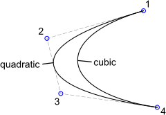

- Изберете степента на сплайна в лентата с инструменти за опции.
Поддържаните степени са 2 (квадратичен b-сплайн) и 3 (кубичен b-сплайн).
Колкото по-висока е степента, толкова по-гладка става кривата.
Обърнете внимание, че квадратичният b-сплайн изисква по дефиниция
поне 3 контролни точки, докато кубичният b-сплайн има поне 4 контролни
точки.
- Поставете отметка в квадратчето "Closed" (Затворен) в лентата с
инструменти за опции, ако искате да създадете затворен сплайн. Затворените
сплайни са непрекъснати затворени цикли.
- Посочете контролните точки. След като определите третата (за
квадратичен b-сплайн) или четвъртата (за кубичен b-сплайн) контролна точка,
ще се покаже предварителен преглед. Можете да премахнете последната
контролна точка отново, като щракнете върху бутона "Undo" (Отмяна) в
лентата с инструменти за опции.
- Натиснете escape или щракнете с десния бутон на мишката след задаване
на последната точка, за да потвърдите формата на сплайна.
- Сега можете да създадете друг сплайн или да щракнете отново с десния
бутон на мишката, за да прекратите работата на инструмента.
Пример за два отворени сплайна (квадратичен и кубичен):

Пример за два затворени, периодични сплайна (квадратичен и кубичен):